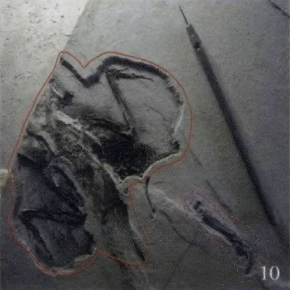
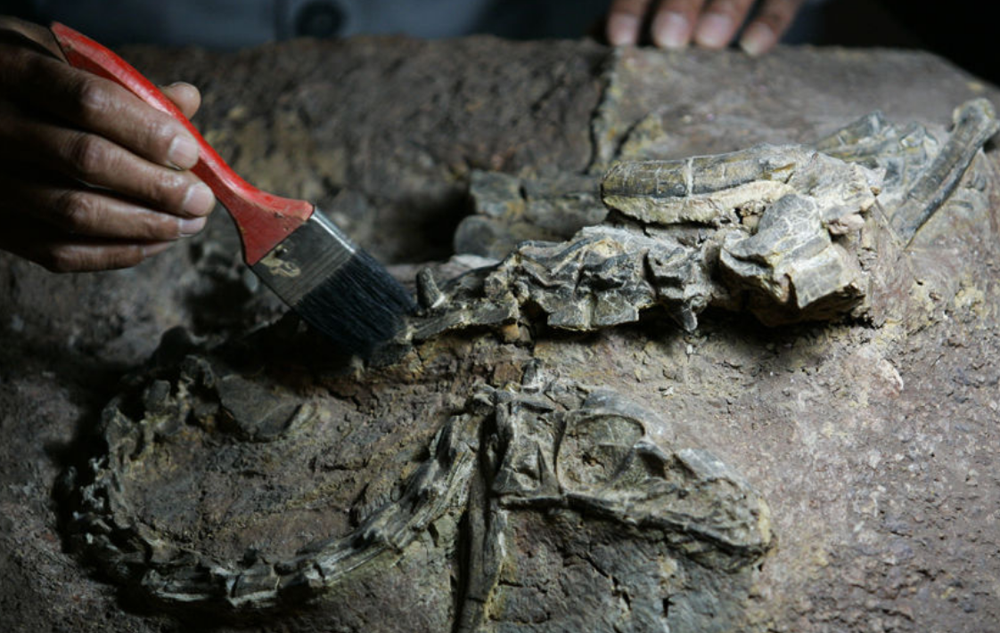

2018-09-04
根据英国独立报报道，今年8月底，英国伦敦刚刚举办了一场盛大的狂欢节，叫诺丁山狂欢节，吸引了上百万人参加。在这场狂欢节上，人们身穿各种华丽的服装，载歌载舞。这个狂欢节每年举办一次，在全世界，除了巴西的里约热内卢狂欢节，就数这个诺丁山狂欢节最热闹了。诺丁山狂欢节
你看世界上很多地方，每年都会举办狂欢节，说白了就是一个街头的大party，人们在街上尽情地狂欢。下面咱们就来说说：狂欢节是怎么发展起来的？为什么要办这种大party？街头大party
最开始办狂欢节，是因为大家准备要过苦日子了，所以要先开心一下。在西方的宗教传统里，有一个40天的大斋期，也就是说，在这40天里，不能吃肉，也不能玩儿。那人们就想，既然要苦一段时间了，干嘛不先痛痛快快地玩儿几天呢？等玩儿够了，再开始大斋期。因为这个原因，这就有了狂欢节。准备过苦日子，先开心一下 40天的大斋期
狂欢节的重头戏，是所有人走上街头的狂欢。咱们中国人看新闻的时候老不理解，说这些老外瞎折腾啥呢？弄得花里胡哨的，有这个必要吗？街头的狂欢 中国人不理解
有这种想法，其实是因为咱们没理解人家，狂欢，就是要让所有人都high起来，这样可以解放天性，平时很多不敢做的事，都可以放到狂欢节这天去做，比方说男扮女装，故意把自己弄得很丑、很出格，然后疯癫癫地过把瘾，起到一种宣泄情感的作用。解放天性、宣泄情感
咱们中国人，老是放不下平时的身份，比方说春节逛庙会的时候，碰上你们班主任了，你还是要规规矩矩地叫声老师好。但是在西方的狂欢节上，没有大人和孩子，没有身份上的差别，所有人都扔掉了自己平时的身份，享受一种平等的狂欢，这是狂欢节跟咱们中国人过节，最大的一个不同。平等的狂欢
根据美国《免疫》杂志上发表的一项最新研究，英国的科学家发现，多吃圆白菜、西兰花这些蔬菜，能够帮助我们预防肠癌。这是因为这些蔬菜吃进肚子，进入肠道以后，能释放出一种化学物质，这种化学物质，能帮我们预防肠癌。圆白菜和西兰花可预防肠癌
像圆白菜、西兰花，还有咱们平时常吃的菜花，它们都有个共同的名字，叫做十字花科蔬菜，十字就是十字架的十字。科学家发现，这类十字花科的蔬菜，很多都具有抗癌功能，那它们都是怎么打败癌细胞的呢？下面咱们来详细说说。十字花科蔬菜
你可以把癌细胞想象成动画片里的大魔王，它能无限地分身，无限地复制自己，然后去破坏那些好的细胞。而十字花科蔬菜里面，有一种抗癌物质，它可以抑制癌细胞的分裂和生长，甚至还可以杀死癌细胞。是不是很厉害！癌细胞，无限分身，破坏好的细胞 十字花科，抗癌物质，抑制癌细胞的分裂和生长
那它是怎么制服癌细胞的呢？怎么做的
癌细胞跟普通的细胞一样，细胞里面有一套DNA，就是遗传物质。癌细胞每一次分身之前，先要复制出一套DNA来，一个癌细胞里先准备好两套DNA，然后才能分身。就是在这个分身的过程里，蔬菜里面的抗癌物质，就能起到作用了。先复制DNA，再分身 抑制分身
比方说，你看动画片里魔王分身的时候，会从现在的身体里，再扯出一个新的身体来。癌细胞分身的时候也是这样，两套DNA复制好了之后，癌细胞就开始分身了，像大魔王一样，也是从现在的身体里，再扯出一个新的身体来。就在这时候，菜花、西蓝花里面的抗癌物质，会硬生生地打断这个往两头儿拽的过程，不让癌细胞分裂，这样癌细胞就没法疯狂地复制自己，破坏我们的身体了。打断分身过程
根据英国《自然》杂志上发表的一项最新研究，有中国科学家在内的科学团队，在中国贵州省发现了一种古老的龟类化石。这种龟出现在两亿多年前，它是最早长出喙的一种龟，喙就是嘴巴那儿像鸟嘴一样，比较尖，硬硬的。贵州发现古老的龟类化石 两亿多年前，最早长出喙的龟
说起化石，你可能在博物馆里见过，比方说恐龙的脚印，鸟类的骨骼，不过博物馆里的化石，可能会给你一种错觉，就是这些化石好像都挺容易弄出来的，只要把一块大石头剖开，就能看到它们了。但实际上，得到化石可没这么简单，每一块你看到的化石，都是专业的师傅，花了好几个月，甚至好几年的时间，清理出来、修复出来的。下面咱们就来说说，化石修复是怎么一回事。化石：恐龙的脚印、鸟类的骨骼 很难清理
博物馆里的化石，里面的骨骼都能露出来，可是在实验室里，化石修复师要面对的，都是一整块石头，里面的化石长什么样子都不知道，所以你不可能大刀阔斧地去削石头、砍石头，万一砍到了里面的化石就坏了。所以化石修复师，只能是一点儿一点儿抠，软的石头土块，用针头挑开，硬的石头就用电钻的针头儿一点儿一点儿钻开了，他们手里的工具，长得就跟你的自动铅笔差不多，只不过他们的尖头是硬的。下面是清理化石的图片。化石修复师，一点点儿扣


等化石清理干净，露出来以后，如果化石有损坏，还要做修复。比方说恐龙化石，屁股那缺了一小块儿，怎么办？那就得用石膏做模型，给它复原出来。像恐龙这种特别大的化石，还要装架子，组装成一个大恐龙骨架的样子。这一通忙活，一套化石才能放到博物馆里给你看。一般一套化石，需要5、6个师傅，花上一两年的时间，才能完成。若有损坏，需修复 恐龙化石，石膏模型，装架子 花费时间
很多化石修复师都说，化石修复的工作并不难，但是非常枯燥，需要耐心、细心和专心，如果不是特别热爱这些东西，是很难坚持下来的。但是因为每一块化石长得都不一样，当他们花了几个月甚至几年的时间完成一件作品的时候，他们都会特别有成就感。不难，枯燥，有成就感